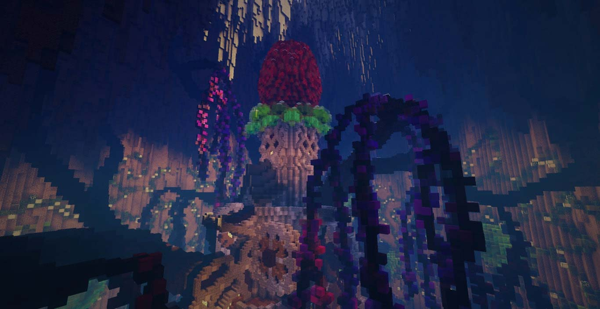
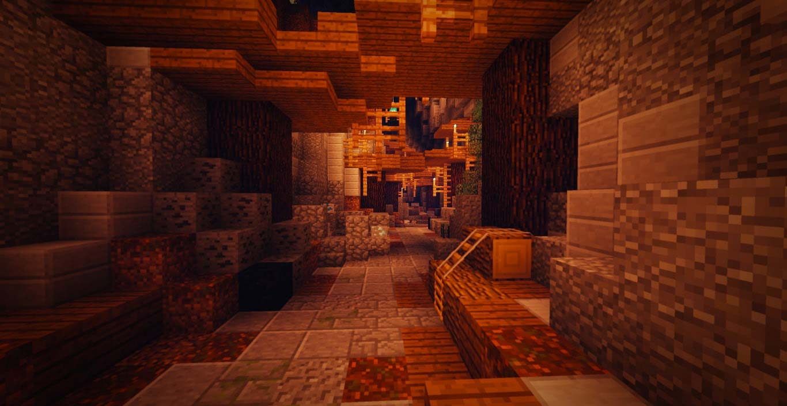
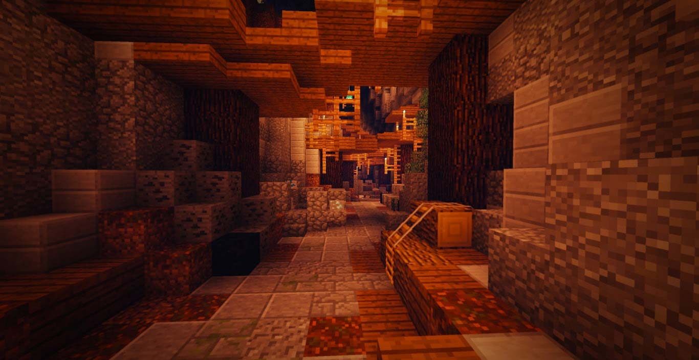
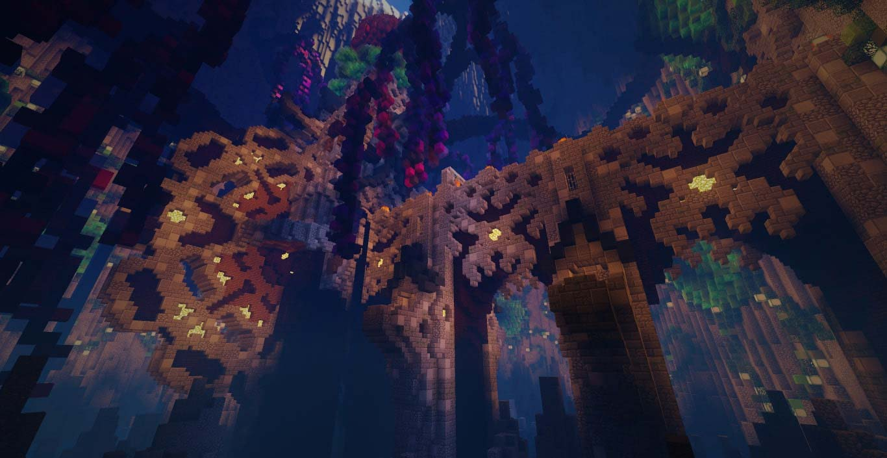
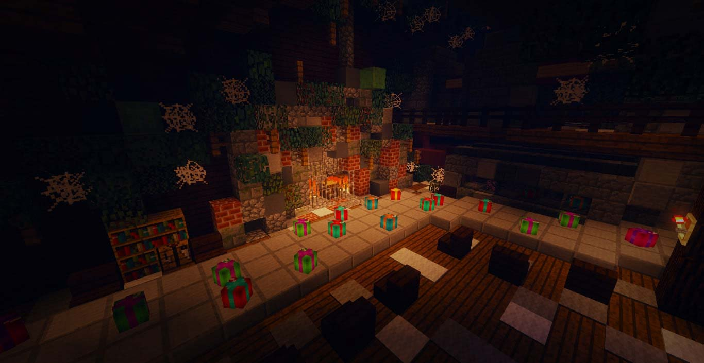
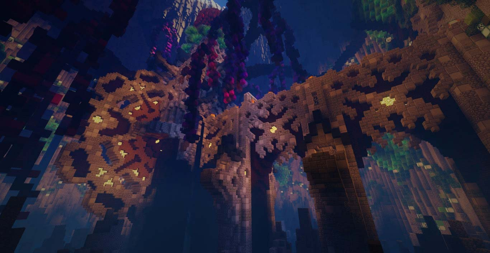
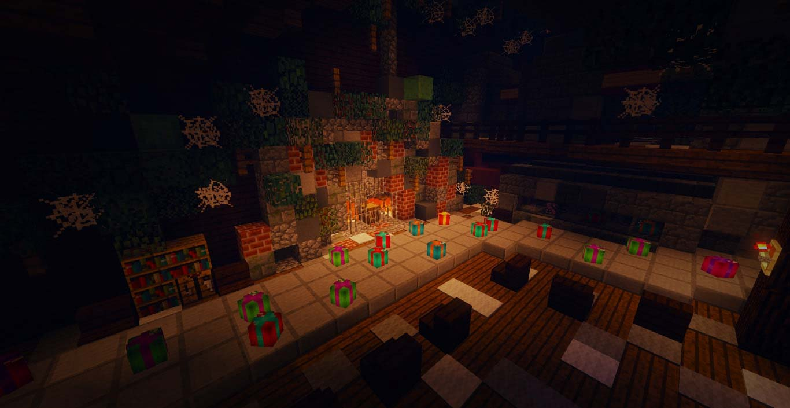

遊戲場景
-

 


 

遊戲設定
- 亮度：不限
- 雲層：關閉
- 視野距離：12以上
- 遊戲難度：非和平模式
注意事項
- 請務必安裝「指定材質包」
- 建議遊玩人數：１～３人
- 地圖預設：防爆、不防噴
- 本地圖遊戲模式皆由系統自主調整，開場為冒險模式，其他時間皆為生存模式
- 電腦性能不佳者，建議至遊戲目錄：選項>顯示設定>動畫>粒子密度
- 此頁面圖片、影片皆為夢想之都工作室所有，若需使用請至粉專私訊詢問
關於CTM
所謂的CTM地圖全名：Complete the Monument，中文稱為「成就碑生存」。
這是一種比生存地圖更刺激的地圖，由外國地圖師Vechs（Super Hostile的作者）創造出來。
CTM的遊戲目標是通過闖關，
把藏在各關卡中的指定成就方塊（通常為十六色方塊）
放在地圖的成就碑上以破關地圖，
但會有很多關卡及陷阱（如：生怪磚）來阻礙玩家完成目標。
玩家留言
版權聲明
您若使用本地圖製作個人作品或二次創作，則視同您同意本工作室無償使用您的作品，作為行銷目的使用。
此頁面圖片、影片與地圖作品皆為夢想之都工作室所有，若用於個人作品或二次創作。
請標註本網站與地圖製作團隊「夢想之都工作室」。